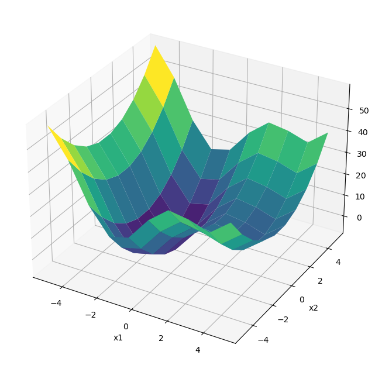

8. Optimization: Exercise Solutions
Contents
8. Optimization: Exercise Solutions#
1. Try with you own function#
Define a function of your interest (with two or more inputs) to be minimized or maximized.
It can be an explicit mathematical form, or given implictly as a result of simulation.
import numpy as np
import matplotlib.pyplot as plt
%matplotlib inline
def fun(x, a=10):
"""sine in quardatic valley"""
x = np.array(x)
y = (x[0]**2+x[1]**2) + a*np.sin(x[0])
return y
def fun_grad(x, a=10):
"""gradient of dips(x)"""
df1 = 2*x[0] + a*np.cos(x[0])
df2 = 2*x[1]
return np.array([df1, df2])
Visualize the function, e.g., by surface plot or contour plot.
w = 5
N = 10
x = np.linspace(-w,w,N)
x1, x2 = np.meshgrid(x, x)
y = fun((x1, x2), 10)
fig = plt.figure(figsize=(8, 8))
ax = fig.add_subplot(projection='3d')
ax.plot_surface(x1, x2, y, cmap='viridis')
plt.xlabel("x1"); plt.ylabel("x2");

Mixmize or minimize the function using two or more optimization algorithms, e.g.
Gradient ascent/descent
Newton-Raphson method
Evolutionary algorithm
scpy.optimize
and compare the results with different starting points and parameters.
Gradiend descent#
def grad_descent(f, df, x0, eta=0.01, eps=1e-6, imax=1000):
"""Gradient descent"""
xh = np.zeros((imax+1, len(np.ravel([x0])))) # history
xh[0] = x0
f0 = f(x0) # initialtization
for i in range(imax):
x1 = x0 - eta*df(x0)
f1 = f(x1)
# print(x1, f1)
xh[i+1] = x1
if(f1 <= f0 and f1 > f0 - eps): # small decrease
return(x1, f1, xh[:i+2])
x0 = x1
f0 = f1
print("Failed to converge in ", imax, " iterations.")
return(x1, f1, xh)
x0 = [1,2]
xmin, fmin, xhist = grad_descent(fun, fun_grad, x0, 0.01)
print(xmin, fmin)
plt.contour(x1, x2, y)
plt.plot(xhist[:,0], xhist[:,1], '.-');
[-1.30644001 0.00485736] -7.945799781640874
x0 = [2,2]
xmin, fmin, xhist = grad_descent(fun, fun_grad, x0, 0.01)
print(xmin, fmin)
plt.contour(x1, x2, y)
plt.plot(xhist[:,0], xhist[:,1], '.-');
[3.83746711 0.00485736] 8.31560917345187
scipy.optimize#
from scipy.optimize import minimize
x0 = [1,2]
result = minimize(fun, x0, jac=fun_grad, options={'disp': True})
print( result.x, result.fun)
plt.contour(x1, x2, y)
plt.plot(x0[0], x0[1], 'x', result.x[0], result.x[1], 'o');
Optimization terminated successfully.
Current function value: -7.945823
Iterations: 6
Function evaluations: 10
Gradient evaluations: 10
[-1.30644001e+00 9.72344832e-09] -7.945823375615283
x0 = [2,2]
result = minimize(fun, x0, jac=fun_grad, options={'disp': True})
print( result.x, result.fun)
plt.contour(x1, x2, y)
plt.plot(x0[0], x0[1], 'x', result.x[0], result.x[1], 'o');
Optimization terminated successfully.
Current function value: 8.315586
Iterations: 9
Function evaluations: 13
Gradient evaluations: 13
[ 3.83746711e+00 -9.70435929e-09] 8.315585579477458
Option) Set equality or inequality constraints and apply an algorithm for constrained optimization.
# h(x) = x[0] - x[1] = 0
def h(x):
return 2*x[0] - x[1] - 4
def h_grad(x):
return np.array([2, -1])
With equality constraint \(h(x)=0\).
x0 = [1,2]
cons = ({'type':'eq', 'fun':h, 'jac':h_grad})
result = minimize(fun, [1,-3], jac=fun_grad,
method='SLSQP', constraints=cons, options={'disp': True})
print( result.x, result.fun)
plt.contour(x1, x2, y)
plt.plot([0,4], [-4,4]) # h(x) = 0
plt.plot(x0[0], x0[1], 'x', result.x[0], result.x[1], 'o');
Optimization terminated successfully (Exit mode 0)
Current function value: 13.081270258785018
Iterations: 6
Function evaluations: 7
Gradient evaluations: 6
[2.13406394 0.26812787] 13.081270258785018
x0 = [1,2]
cons = ({'type':'ineq', 'fun':h, 'jac':h_grad})
result = minimize(fun, [1,-3], jac=fun_grad,
method='SLSQP', constraints=cons, options={'disp': True})
print( result.x, result.fun)
plt.contour(x1, x2, y)
plt.plot([0,4], [-4,4]) # h(x) = 0
plt.plot(x0[0], x0[1], 'x', result.x[0], result.x[1], 'o');
Optimization terminated successfully (Exit mode 0)
Current function value: 8.31558557983486
Iterations: 13
Function evaluations: 21
Gradient evaluations: 13
[3.83746046e+00 1.30908488e-05] 8.31558557983486